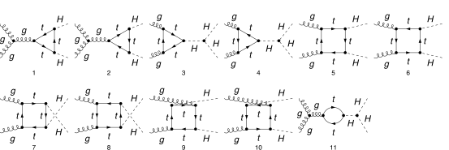

description = "GlGl -> HH, QCD, amplitude, 1-loop";
If[ $FrontEnd === Null,
$FeynCalcStartupMessages = False;
Print[description];
];
If[ $Notebooks === False,
$FeynCalcStartupMessages = False
];
LaunchKernels[8];
$LoadAddOns = {"FeynArts", "FeynHelpers"};
<< FeynCalc`
$FAVerbose = 0;
$ParallelizeFeynCalc = True;
FCCheckVersion[10, 2, 1];
If[ToExpression[StringSplit[$FeynHelpersVersion, "."]][[1]] < 2,
Print["You need at least FeynHelpers 2.1 to run this example."];
Abort[];
]\text{FeynCalc }\;\text{10.2.1 (dev version, 2026-06-17 10:56:47 +02:00, 17905d6e). For help, use the }\underline{\text{online} \;\text{documentation},}\;\text{ visit the }\underline{\text{forum}}\;\text{ and have a look at the supplied }\underline{\text{examples}.}\;\text{ The PDF-version of the manual can be downloaded }\underline{\text{here}.}
\text{If you use FeynCalc in your research, please evaluate FeynCalcHowToCite[] to learn how to cite this software.}
\text{Please keep in mind that the proper academic attribution of our work is crucial to ensure the future development of this package!}
\text{FeynArts }\;\text{3.12 (27 Mar 2025) patched for use with FeynCalc, for documentation see the }\underline{\text{manual}}\;\text{ or visit }\underline{\text{www}.\text{feynarts}.\text{de}.}
\text{If you use FeynArts in your research, please cite}
\text{ $\bullet $ T. Hahn, Comput. Phys. Commun., 140, 418-431, 2001, arXiv:hep-ph/0012260}
\text{FeynHelpers }\;\text{2.1.0 (2026-06-17 11:21:04 +02:00, 1d1a414a). For help, use the }\underline{\text{online} \;\text{documentation},}\;\text{ visit the }\underline{\text{forum}}\;\text{ and have a look at the supplied }\underline{\text{examples}.}\;\text{ The PDF-version of the manual can be downloaded }\underline{\text{here}.}
\text{ If you use FeynHelpers in your research, please evaluate FeynHelpersHowToCite[] to learn how to cite this work.}
diags = InsertFields[CreateTopologies[1, 2 -> 2, ExcludeTopologies -> {Tadpoles}],
{V[5], V[5]} -> {S[1], S[1]}, InsertionLevel -> {Particles},
ExcludeParticles -> {F[4], F[3, {1 | 2, _}]}, Model -> SMQCD];Paint[diags, ColumnsXRows -> {6, 2}, SheetHeader -> False,
Numbering -> Simple, ImageSize -> 128 {6, 2}];
ampRaw = FCFAConvert[CreateFeynAmp[diags, PreFactor -> 1],
IncomingMomenta -> {p1, p2}, OutgoingMomenta -> {-q1, -q2}, LoopMomenta -> {k},
UndoChiralSplittings -> True, ChangeDimension -> D, List -> True, SMP -> True,
TransversePolarizationVectors -> {p1, p2},
DropSumOver -> False] // SMPToSymbol // ReplaceAll[#, mH -> mh] &;Each of the remaining diagrams has a color matrix so that it is safe to remove SumOver symbols
glglToHH$Amp = ampRaw /. SumOver[__] -> 1;processID = "glglToHHat1L";Notice that all external momenta are incoming
FCClearScalarProducts[];
SetMandelstam[s, t, u, p1, p2, q1, q2, 0, 0, mh, mh];AbsoluteTiming[glglToHH$Amp1 = glglToHH$Amp // Contract[#, FCParallelize -> True] & //
DiracSimplify[#, FCParallelize -> True] & // SUNSimplify[#, FCParallelize -> True] &;]\{0.836677,\text{Null}\}
glglToHH$StrName = StringReplace[ToString[Hold[glglToHH$Amp]], {"Hold[" -> "", "]" -> ""}]\text{glglToHH\$Amp}
{glglToHH$Amp2, glglToHH$Topos} = FCLoopFindTopologies[glglToHH$Amp1, {k}, FCParallelize -> True,
Names -> glglToHH1Ltopo, FinalSubstitutions -> {s -> 2 mh^2 - t - u}];\text{FCLoopFindTopologies: Number of the initial candidate topologies: }4
\text{FCLoopFindTopologies: Number of the identified unique topologies: }3
\text{FCLoopFindTopologies: Number of the preferred topologies among the unique topologies: }0
\text{FCLoopFindTopologies: Number of the identified subtopologies: }1
\text{FCLoopFindTopologies: }\;\text{Final number of found topologies: }3
AbsoluteTiming[glglToHH$Amp3 = FCLoopTensorReduce[glglToHH$Amp2, glglToHH$Topos, FCParallelize -> True];]\{2.77738,\text{Null}\}
AbsoluteTiming[{glglToHH$Amp4, glglToHH$Topos2} = FCLoopRewriteOverdeterminedTopologies[glglToHH$Amp3,
glglToHH$Topos, FCParallelize -> True];]\text{FCLoopRewriteIncompleteTopologies: }\;\text{No overdetermined topologies detected.}
\{0.704231,\text{Null}\}
AbsoluteTiming[{glglToHH$Amp5, glglToHH$Topos3} = FCLoopRewriteIncompleteTopologies[glglToHH$Amp4,
glglToHH$Topos2, FCParallelize -> True];]\text{FCLoopRewriteIncompleteTopologies: }\;\text{No incomplete topologies detected.}
\{0.666513,\text{Null}\}
glglToHH$Subtopos = FCLoopFindSubtopologies[glglToHH$Topos3, FCParallelize -> False, Names -> R];\text{FCLoopFindSubtopologies: }\;\text{Final number of found subtopologies: }23
glglToHH$TopoMappings = FCLoopFindTopologyMappings[glglToHH$Topos3, PreferredTopologies -> glglToHH$Subtopos,
FCParallelize -> True];\text{FCLoopFindIntegralMappings: }\;\text{Final number of found mappings: }1
\text{FCLoopFindTopologyMappings: }\;\text{Found }0\text{ mapping relations }
\text{FCLoopFindTopologyMappings: }\;\text{Final number of independent topologies: }3
AbsoluteTiming[glglToHH$AmpGLI = FCLoopApplyTopologyMappings[glglToHH$Amp5, glglToHH$TopoMappings, FCParallelize -> True];]\{17.3378,\text{Null}\}
glglToHH$GLIs = Cases2[glglToHH$AmpGLI, GLI];glglToHH$dir = FileNameJoin[{$TemporaryDirectory, "Reduction-" <> glglToHH$StrName <> "-1L"}];
Quiet[CreateDirectory[glglToHH$dir]];tables = FIREReduceLoopIntegrals[glglToHH$GLIs, glglToHH$TopoMappings, glglToHH$dir];\text{FIREPrepareStartFile: }\;\text{Created }3\text{ script files.}
(*Creating config file (1/3) for glglToHH1Ltopo1 (glglToHH1Ltopo1.config)... done.
Creating config file (2/3) for glglToHH1Ltopo2 (glglToHH1Ltopo2.config)... done.
Creating config file (3/3) for glglToHH1Ltopo3 (glglToHH1Ltopo3.config)... done.
glglToHH1Ltopo1, number of loop integrals: 15
glglToHH1Ltopo2, number of loop integrals: 32
glglToHH1Ltopo3, number of loop integrals: 32
Creating LiteRed files (1/3) for glglToHH1Ltopo1... done, timing: 5.128
Creating LiteRed files (2/3) for glglToHH1Ltopo2... done, timing: 5.159
Creating LiteRed files (3/3) for glglToHH1Ltopo3... done, timing: 4.905
Creating FIRE files (1/3) for glglToHH1Ltopo1... done, timing: 5.912
Creating FIRE files (2/3) for glglToHH1Ltopo2... done, timing: 6.376
Creating FIRE files (3/3) for glglToHH1Ltopo3... done, timing: 6.408
Running reduction (1/3) for glglToHH1Ltopo1... done, timing: 0.8466
Running reduction (2/3) for glglToHH1Ltopo2... done, timing: 4.181
Running reduction (3/3) for glglToHH1Ltopo3... done, timing: 4.118
Importing reduction tables (1/3) for FileBaseName[glglToHH1Ltopo1]... done.
Importing reduction tables (2/3) for FileBaseName[glglToHH1Ltopo2]... done.
Importing reduction tables (3/3) for FileBaseName[glglToHH1Ltopo3]... done.
*)\text{FIRECreateConfigFile: }\;\text{Created }3\text{ .config files.}
\text{FIRECreateIntegralFile: }\;\text{Created }3\text{ integral files.}

\text{FIRECreateLiteRedFiles: }\;\text{Run }3\text{ script files.}
\text{FIRECreateStartFile: }\;\text{Run }3\text{ script files.}
\text{FIRERunReduction: }\;\text{Reduced }3\text{ topologies.}
\text{FIREImportResults: }\;\text{Imported }3\text{ reduction tables.}
masters = Cases2[Last /@ tables, GLI];AbsoluteTiming[intMappings = FCLoopFindIntegralMappings[masters, glglToHH$TopoMappings, FCParallelize -> True, FinalSubstitutions -> {s -> 2 mh^2 - t - u}];]\text{FCLoopFindIntegralMappings: }\;\text{Final number of found mappings: }11
\{0.341766,\text{Null}\}
AbsoluteTiming[glglToHH$resPreFinal1 = (glglToHH$AmpGLI /. Dispatch[tables] /. Dispatch[intMappings[[1]]]) // FeynAmpDenominatorExplicit[#, FCParallelize -> True] &;]\{13.2846,\text{Null}\}
AbsoluteTiming[glglToHH$resPreFinal2 = Collect2[glglToHH$resPreFinal1, GLI, FCParallelize -> True];]\{20.2646,\text{Null}\}
AbsoluteTiming[glglToHH$resPreFinal3 = Collect2[glglToHH$resPreFinal2, GLI, Factoring -> Function[x, Factor2[TrickMandelstam[x, {s, t, u, 2 mh^2}]]], FCParallelize -> True];]\{19.703,\text{Null}\}
AbsoluteTiming[glglToHH$resFinal = Collect2[Total[glglToHH$resPreFinal3], GLI, Factoring -> Function[x, Factor2[TrickMandelstam[x, {s, t, u, 2 mh^2}]]], FCParallelize -> True];]\{6.08832,\text{Null}\}
Check gauge invariance of the amplitude
polVec1 = Pair[LorentzIndex[mu, D], Momentum[Polarization[p1, I, Transversality -> True], D]];
rulePolVec1 = Contract[(FVD[p2, mu] == -FVD[q1 + q2 + p1, mu]) polVec1] /. Equal -> Rule // ExpandScalarProduct;polVec2 = Pair[LorentzIndex[mu, D], Momentum[Polarization[p2, I, Transversality -> True], D]];
rulePolVec2 = Contract[(FVD[p1, mu] == -FVD[q1 + q2 + p2, mu]) polVec2] /. Equal -> Rule // ExpandScalarProduct;rulePolVec = {rulePolVec1, rulePolVec2}\{\text{p2}\cdot \varepsilon (\text{p1})\to -(\text{q1}\cdot \varepsilon (\text{p1}))-\text{q2}\cdot \varepsilon (\text{p1}),\text{p1}\cdot \varepsilon (\text{p2})\to -(\text{q1}\cdot \varepsilon (\text{p2}))-\text{q2}\cdot \varepsilon (\text{p2})\}
AbsoluteTiming[check1 = TrickMandelstam[glglToHH$resPreFinal3 /. Momentum[Polarization[p2, ___], D] :> Momentum[p2, D] /. rulePolVec, {s, t, u, 2 mh^2}, FCParallelize -> True];]\{3.81445,\text{Null}\}
AbsoluteTiming[check2 = Collect2[Total[check1], GLI, FCParallelize -> True] // TrickMandelstam[#, {s, t, u, 2 mh^2}] &;]\{0.089635,\text{Null}\}
check20
We take the literature result from Eqs. 2 and 3 of the Glover and van der Bij paper, CERN-TH-4934/87, https://cds.cern.ch/record/183945/files/198802013.pdf
pT2 = (u t - mh^4)/s;
Aten[mu_, nu_] := MT[mu, nu] - FV[p1, nu] FV[p2, mu]/SPD[p1, p2];
Bten[mu_, nu_] := MT[mu, nu] + mh^2 FV[p1, nu] FV[p2, mu]/(pT2 SPD[p1, p2]) - 2 SPD[p1, q1] FV[p2, mu] FV[q1, nu]/(pT2 SPD[p1, p2]) -
2 SPD[p2, q1] FV[p1, nu] FV[q1, mu]/(pT2 SPD[p1, p2]) + 2 FV[q1, mu] FV[q1, nu]/pT2;Dfun[q1_, q2_, p3_] := TrickMandelstam[1/(I Pi^2) ToPaVe[FAD[{k, mt}, {k + q1, mt}, {k + q1 + q2, mt},
{k + q1 + q2 + p3, mt}], k] // PaVeOrder, {s, t, u, 2 mh^2}];Cfun[q1_, q2_] := TrickMandelstam[1/(I Pi^2) ToPaVe[FAD[{k, mt}, {k + q1, mt},
{k + q1 + q2, mt}], k] // PaVeOrder, {s, t, u, 2 mh^2}];litResGauge1Tri = 12 mh^2 mt^2/(s - mh^2) (2 + (4 mt^2 - s) Cfun[p1, p2]);litResGauge1Box = 4 mt^2 (
mt^2 (8 mt^2 - s - 2 mh^2) (Dfun[p1, p2, q1] + Dfun[p2, p1, q1] +Dfun[p1, q1, p2])
+ ( u t - mh^4)/s (4 mt^2 - mh^2) Dfun[p1, q1, p2] + 2 + 4 mt^2 Cfun[p1, p2] +
2/s (mh^2 - 4 mt^2) ( (t - mh^2) Cfun[p1, q1] + (u - mh^2) Cfun[p2, q1] )
);litResGauge2Box = 2 mt^2 (
2 (8 mt^2 + s - 2 mh^2)*( mt^2 (Dfun[p1, p2, q1] + Dfun[p2, p1, q1] + Dfun[p1, q1, p2]) - Cfun[q1, q2])
- 2 (s Cfun[p1, p2] + (t - mh^2) Cfun[p1, q1] + (u - mh^2) Cfun[p2, q1] ) +
1/(u t - mh^4) (
s u (8 u mt^2 - u^2 - mh^4) Dfun[p1, p2, q1] +
s t (8 t mt^2 - t^2 - mh^4) Dfun[p2, p1, q1] +
(8 mt^2 + s - 2 mh^2) (
s (s - 2 mh^2) Cfun[p1, p2] + s (s - 4 mh^2) Cfun[q1, q2] +
2 t (mh^2 - t) Cfun[p1, q1] + 2 u (mh^2 - u) Cfun[p2, q1])
)
);litAmpRaw = Contract[((litResGauge1Box + litResGauge1Tri) Aten[mu, nu] + litResGauge2Box Bten[mu, nu]) Pair[LorentzIndex[mu, D],
Momentum[Polarization[p1, I, Transversality -> True], D]] Pair[LorentzIndex[nu, D], Momentum[Polarization[p2, I, Transversality -> True], D]]] // ChangeDimension[#, 4] &;litAmp = Collect2[ToPaVe2[litAmpRaw], PaVe, Factoring -> Function[x, TrickMandelstam[x, {s, t, u, 2 mh^2}]]];mastersNew = Cases2[glglToHH$resFinal, GLI];mastersNewPaVe = ToPaVe2[ToPaVe[FDS[FCLoopFromGLI[mastersNew, glglToHH$TopoMappings[[2]]], k], k] // TrickMandelstam[#, {s, t, u, 2 mh^2}] &]\left\{i \pi ^2 \;\text{C}_0\left(0,\text{mh}^2,t,\text{mt}^2,\text{mt}^2,\text{mt}^2\right),i \pi ^2 \;\text{C}_0\left(0,\text{mh}^2,u,\text{mt}^2,\text{mt}^2,\text{mt}^2\right),i \pi ^2 \;\text{D}_0\left(0,\text{mh}^2,0,\text{mh}^2,t,u,\text{mt}^2,\text{mt}^2,\text{mt}^2,\text{mt}^2\right),i \pi ^2 \;\text{B}_0\left(s,\text{mt}^2,\text{mt}^2\right),i \pi ^2 \;\text{C}_0\left(\text{mh}^2,\text{mh}^2,s,\text{mt}^2,\text{mt}^2,\text{mt}^2\right),i \pi ^2 \;\text{C}_0\left(0,0,s,\text{mt}^2,\text{mt}^2,\text{mt}^2\right),i \pi ^2 \;\text{D}_0\left(0,0,\text{mh}^2,\text{mh}^2,s,t,\text{mt}^2,\text{mt}^2,\text{mt}^2,\text{mt}^2\right),i \pi ^2 \;\text{D}_0\left(0,0,\text{mh}^2,\text{mh}^2,s,u,\text{mt}^2,\text{mt}^2,\text{mt}^2,\text{mt}^2\right)\right\}
prefLit = ((1/2*I)*mW^2)/(alphas*alphaW*Pi^4*SUNDelta[SUNIndex[Glu1], SUNIndex[Glu2]]);ruleCouplings = {gs^2 -> 4*alphas*Pi, e -> gW*sinW, gW^2 -> 4*alphaW*Pi};res$Check1 = Collect2[PaVeLimitTo4[prefLit glglToHH$resFinal //. ruleCouplings /. Thread[Rule[mastersNew, mastersNewPaVe]]] // ToPaVe2, PaVe];diff = Collect2[ToPaVe2[res$Check1 - litAmp ] /. ChangeDimension[rulePolVec, 4], PaVe, Factoring -> Function[x, TrickMandelstam[x, {s, t, u, 2 mh^2}]]]0
```mathematica knownResult = 0; FCCompareResults[diff, knownResult, Text -> {“to Glover and van Der Bij, CERN-TH-4934/87, Eqs. 2-3:”, “CORRECT.”, “WRONG!”}, Interrupt -> {Hold[Quit[1]], Automatic}]; Print[“Time used:”, Round[N[TimeUsed[], 4], 0.001], ” s.”];
```mathematica
\text{$\backslash $tCompare to Glover and van Der Bij, CERN-TH-4934/87, Eqs. 2-3:} \;\text{CORRECT.}
\text{$\backslash $tCPU Time used: }106.932\text{ s.}